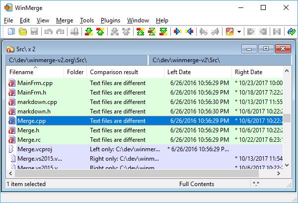

This topic describes how to compare and merge folders using the Folder Compare window.
You can begin a folder compare operation from either the WinMerge window or a Command Prompt window.
- From the WinMerge window
-
Click → . Use the Select Files or Folders dialog to specify the left and right folders to compare. By default, the compare includes all files in the folders, and is nonrecursive (does not include subfolders). To change any of these options and for more details about the Select Files or Folder dialog, see Opening files and folders.
- From a Command Prompt window
-
Run WinMergeU.exe, which is in your WinMerge install directory. In your command arguments, include the left and right folders to compare. By default, the compare includes all files in the folders, and is nonrecursive. To change any of these options and for information about other command options, see Command line.
![[Tip]](images/tip.gif) |
Tips |
|---|---|
|
When you start a folder compare operation, WinMerge displays this status window:
If the compare operation is quick, you might not notice the Progress window, which closes as soon as WinMerge displays the Folder Compare result. The Progress window shows the number of files and folders to be included in the operation, and the number compared so far. The progress bar graphically represents the Items compared.
![[Note]](images/note.gif) |
Note |
|---|---|
|
Because the files compares are usually of different sizes, the status data does not indicate the time used or remaining. For example, a 50/100 ratio does not necessarily mean that half of the compare operation time is expired. |
You can click to terminate the operation at any time before the compare operation finishes. The Folder Compare window is displayed with the results calculated at that time, omitting any uncompleted results.
The Folder Compare window shows the result of a folder compare. Two different views are available:
- Tabular view
-
In tabular view, each file or folder in the result is listed in a row. This is the default view. Here's an example:
 - Tree view
-
In the tree view, folders are expandable and collapsible, containing files and subfolders. The tree view is available only in recursive compares. For example:
-
To expand or collapse a single folder, click the plus or minus control beside the folder icon, or double-click anywhere in the row.
-
To expand or collapse all folders in the view, click → or → in the menu.
-
During a recursive compare (that is, if you enabled the
Include Subfolders option in the Select Files or Folders
dialog when you launched the compare), you can click → command to switch between the two views. The → command is disabled for non-recursive compares.
In both views, the columns show different types of data for each result item. You can control the sorting of items in the view by clicking a column heading. This changes the sorting in two ways:
-
Toggles (reverses) the sort order of the column.
-
Resorts all the rows in the view by the column.
The Folder Compare window looks and behaves slightly differently for recursive and nonrecursive compares:
- Recursive folder compare
-
The compare result includes all subfolders. You can control the types of items displayed within the folders by choosing the options in the menu (for example, ). The Folder column is always empty: only the files within the folders are displayed. To see an item's subfolder, look at its path in the Compare result column. Folders that exist on only one side are displayed if one of the menu options, or , is enabled.
- Nonrecursive folder compare
-
The result includes only the files and subfolders at the top level of the selected folders. However, you can browse to any subfolder that you want to compare.
In the Compare Folders window, files and folders are compared and divided into several categories. In each row, the category is clearly identified in the left column with one of these icons :
| Identical text files |
| Identical binary files |
| Identical files (type undetermined) |
| Different text files |
| Different binary files |
| Different files (type undetermined) |
| Different folders (in tree view only) |
| Left-only folders |
| Right-only folders |
| Right-only files |
| Skipped (filtered) directories |
| Skipped (filtered) files |
| Items that can't be compared; for example when another program has locked the file. |
| Aborted item. WinMerge did not finish comparing this item when the compare was stopped. The result is unknown. |
You can use the mouse as well as keyboard and context menu shortcuts to navigate the Folder Compare window. You can also use the toolbar buttons. For example, the button finds the next different file or folder and selects it.
|
Note |
|---|---|
|
Unique files and folders are navigated in the same way as different ones. |
You can select multiple files and folders. However, some operations (like Rename) are not available with multiple selections.
Use the navigation buttons (, , and so on) to step through differences in the compared files. Use WinMerge functions to merge contents by copying, moving, or delete one or more files or subfolders.
The Folder Compare window supports common operations on files, like editing, copying, deleting, moving, and renaming (moving is equivalent to a copy operation followed by a delete). You can use these file operations and some special WinMerge functions to merge the contents of folders. You can also open files using associated programs or external editors.
The most convenient way to perform most of these tasks is to right-click one or more items and use the context menu, where all file operations are available.
The most common file operation in the Folder Compare window is copying files from side to side. There are several forms of the WinMerge copy function: all of them copy only files that are different, because copying identical files is of no use in merging. The copy functions are available in the context menu, in the WinMerge menu, and in the toolbar:
In the Folder Compare window's context menu, the item has a submenu with four shortcuts:
-
and copy the selection (or just the items in the selection that can be copied) from one side to the other. In the example, the suffix (2 of 4) indicates that only the two files that are different will be copied; the identical files will not. These shortcuts available only if any of the files you select is different: if you select only identical files, the shortcuts are unavailable.
-
and enable you to specify a copy target directory in your system, instead of a compared folder. When the Browse for Folder dialog opens, navigate to the target directory on your system (or create a new target folder) and click .
In the Folder Compare toolbar,  and
and
 accomplish the
same task as the and
context menu shortcuts: they
copy from side to side only files that are valid to copy. However, these
commands do not directly display the number of files to be copied;
instead, they display a confirmation dialog where you can check a list
of source and target file paths.
accomplish the
same task as the and
context menu shortcuts: they
copy from side to side only files that are valid to copy. However, these
commands do not directly display the number of files to be copied;
instead, they display a confirmation dialog where you can check a list
of source and target file paths.
In the WinMerge menu, → and → behave the same way as the toolbar Copy commands.
You can use the context menu item to delete selected items in either or both sides. Like other file operations, has a submenu with , , and shortcuts.
![[Warning]](images/warning.gif) |
Warning |
|---|---|
|
We highly recommend that you keep the Send deleted files into Recycle Bin option enabled See Options and configuration), so that you can undo deletions in case of accidents. In addition, you should keep Recycle Bin enabled: the WinMerge option does not work if you disable the Recycle Bin in Windows. Again, you cannot undo file or folder deletion unless you use both the WinMerge Send deleted files into Recycle Bin option and the Windows Recycle Bin! |
To rename a file or folder, choose in its context menu or press F2. Then change the name in the edit box and press Return, or press Esc to cancel. You can only rename a single file or folder. Note that renaming changes items in both sides: it is not currently possible to rename an item on just one side.
In the context menu, you can use either and , depending on which side you want to operate on. Each menu item has a submenu with these shortcuts:
-
Opens the file with the application (if any) that is registered in Windows for the file's type.
Tip This shortcut usually opens a folder in a new Windows Explorer.
- with External Editor
-
Opens the file with an external editor. The default editor is Notepad, but you can configure a different one in WinMerge options.
-
Opens the Open With dialog, where you can specify an application to open your file with.
The context menu and shortcuts copy the pathname or filename of selected items to the Windows clipboard. You can then paste the copied information into a file or application, for example to create a list of changed files or a change log.
-
has a menu with three shortcuts, similar to other file operations. It copies the full pathnames of one or more selected items to the clipboard, one per line.
-
copies only filenames without paths.
To protect the files and folders on either side of a compare from changes, enable the → or → check box.
![[Important]](images/important.gif) |
Important |
|---|---|
|
Setting the read-only option protects files and folders only in the current compare view; it does not affect their Windows file attributes. |
This protected status is inherited by files that you open in the folder compare. For example, if you compare two folders, set one side read-only, and open two files for comparing, the open file on the protected side is write-protected. Similarly, you cannot copy a file from the unprotected side to the protected side.
The RO code in the left or right side's pane in the status bar (near the bottom right of the window) indicates that the side is currently read-only.
A full refresh of large folders can take a long time. In WinMerge 2.2 and earlier, you always had to do a full refresh to update files after editing them outside WinMerge. Starting in Version 2.4, WinMerge can refresh just selected items: choose from the context menu or → from the main menu.
Use the context menu menu item to create a new archive file containing the items you select.
|
Note |
|---|---|
|
Archive support requires that you have installed the WinMerge 7-Zip plugin. |
The Zip menu item has a submenu with four shortcuts:
- Left
-
Adds left-side files and folders recursively to the archive file
- Right
-
Adds right-side files and folders recursively to the archive file
- Both
-
Adds files and folders recursively from both sides to the archive file. Because the filenames are same, they are added to different subfolders, named
OriginalandAltered, inside the archive: left-side files are put toOriginal, and right-side files are put intoAltered. - Differences
-
Like , but adds only different files (including unique files) from both sides.
When you select one of the shortcuts, the Save As dialog prompts you for the archive filename and type. WinMerge cannot add files to existing archive files: it always creates a new archive file.
|
Tip |
|---|---|
|
WinMerge can compare the contents of archive files that have the
same name on both sides: WinMerge looks for the |
If a folder compare includes the contents of an archive file, any changes made to the included files in WinMerge (for example, using an file operation to edit the file) are saved in the archive file. But you cannot update archive contents by using the WinMerge , , or file operations. Instead, create a new archive file using one of the shortcuts.
This section discusses ways to browse folders that are listed in a Compare Folder window. When you browse a folder, you perform a completely new compare operation. Its result overwrites the current result in the window.
Even though a nonrecursive folder compare does not include the contents of subfolders, the subfolders themselves are listed as files in the result. Similarly, the compared folder's parent folder is listed as a file at the top of the table. By opening these folders directly in the Folder Compare window, you can selectively browse a directory tree. This approach — comparing just the subdirectories you are interested in — can be more efficient than performing a recursive compare on the entire directory tree.
- Browsing the parent folder
-
To compare the parent folder (the .. path at the top), double-click its row, or select the row and press Enter.
Sometimes the parent folder cannot be opened (for example if you do not have permissions to access it). These two icons indicate whether a parent folder can be opened:
Parent folder can be opened. Parent folder cannot be opened.
- Browsing a single subfolder that exists on both sides
-
To compare a single subfolder that exists on both sides, double-click the folder in the folder compare window.
- Browsing a single subfolder that exists only one side
-
If you browse to a subfolder that exists only the left or right side, WinMerge can create a new, matching folder on the other side. See Browsing unique folders for details.
- Browsing two different subfolders
-
You cannot compare two subfolders (that is, selecting two rows) where the subfolders on each side are different. Only if you have previously compared identical folders (for example, by browsing a single subfolder in a compare result) can you compare two subfolders. First select the two folders in the Folder Compare window, as shown in the following figure:
The order of selection is significant: the folder you select first is the left folder in the result; the second selected folder becomes the right folder in the result.
With the two folders selected, right-click and choose (or click → in the menu).
Tip Again, the operation is available only when the current left and right folder paths are identical in the Folder Compare window, as shown in the preceding screen shot. For example, it is not available if the current window compares two different folders.
In WinMerge 2.6 and earlier, you could not browse to unique folders (folders that exist only in one side of a compare result), because WinMerge cannot compare an existing folder to a non-existing folder. To copy anything from a unique folder in WinMerge, you had to first create a copy of the entire folder structure.
However, you might prefer not to copy the whole folder structure. Starting in Version 2.8, WinMerge provides an alternate way to create a new, empty folder instead. This enables you to copy just the elements you want from the original, unique folder to the created empty folder. This procedure demonstrates:
-
Browse to the unique folder (select the folder and press Enter, double-click it, or right-click it and choose ). For example:
A WinMerge message informs you that the folder exists on only one side and cannot be opened. The message then prompts you to confirm whether you want to create a matching folder and open it as the other side of the compare result.
-
Click to confirm ( cancels the compare). In the new compare result, the unique folder is opened on the left side, and the new empty created folder is on the right:
In the compare result, you can copy or move items (for example, using the right-click context menu) from the unique folder to the created folder.
This section describes how to control the way Folder Compare window displays results. You can customize the view by showing, hiding, and reordering the table columns.
The menu contains these shortcuts to show or hide types of items. Enable (check) a menu option to show the item; disable it to hide the item.
-
: Files detected as identical
-
: Files detected as different
-
: Files and directories present only in left side
-
: Files and directories present only in right side
-
: Files and directories omitted by file filters
-
: Files detected as binaries
The rows in the Folder Compare window are ordered according to the sort order of a particular column. This sort column is indicated by a small arrow in its heading. The arrow points up if the column is sorted in ascending order, down if descending. The Folder Compare example at the top of this topic is sorted by the Filename column, in ascending order.
To choose another order column, simply click in that column's heading. The selected column is set to its default sort order and all the rows are reordered by that column's sort order.
To change the sort direction of a column that is already the sort column, click in its header again. That is, clicking in a sort column header reverses its order (toggling between ascending and descending order).
To modify the columns that are displayed in the Folder Compare window:
-
Right-click any column heading and choose . Or, click →
-
The Display Columns dialog contains a list of all the available column names, each with a check box. Configure the columns using any combination of these actions:
-
Check the columns you want to display (note that selecting the item in the list is not enough)
-
Uncheck the columns you want to hide.
-
To change the order of columns, select one or more items and click or .
-
Click if you want to restore the default WinMerge column configuration, overriding your custom configuration.
-
-
Click .
The following columns in the Display Columns dialog are displayed by default in the Folder Compare window:
-
Filename (default): Name of compared item. In a nonrecursive compare, this column includes both files and folders; in a recursive compare, it does not include folders: instead, folders are listed in the Folder column.
-
Folder: Path of compared subfolder, relative to the compared folder. For a nonrecursive compare this column is always empty: folders are listed in the Filename column instead.
-
Comparison result: Verbose comparison result (see also Short Result).
-
Left Date, Right Date: Modification dates of item in each side. The newer of the two dates (or the date for any unique item) is prefixed with an asterisk ( * ).
-
Extension: File extension, handy for sorting.
The following additional columns are available in the Display Columns dialog:
-
Short Result: Displays the Comparison result column in a brief (Right only) form.
-
Binary: Column contains an asterisk ( * ) when the file is a binary file. This is handy for sorting and for use with the Short Result column.
-
Left Attributes, Right Attributes: Shows file attributes.
-
Left Creation Time, Right Creation Time: Item creation time.
-
Left Encoding, Right Encoding: File encoding. Shows the codepage number for ANSI files and Unicode encoding for Unicode files.
-
Left File Version, Right File Version: Version number from the file, if present. Note that the version is read only for some binary file types known to usually have a version resource.
-
Left Size, Right Size: File size in bytes.
-
Left Size (Short), Right Size (Short): Shorter versions of file sizes, rounded to KB, MB, or GB.
-
Newer File: Shows which side is newer.
-
Differences: Number of differences found between files, excluding possibly ignored differences.
-
Ignored Diff: Number of ignored differences within files. These are differences ignored by line filters.
-
Left EOL, Right EOL: Shows the EOL (linefeed) style of files.
You can quickly hide one or more selected items by using the context menu shortcut. The items remain hidden until you refresh the view (press F5) or click → .
|
Tip |
|---|---|
|
Get to know : it can save you a lot of time by eliminating items that you already handled, or that are not currently of interest, from the view. For example, you might hide files after merging them, making it easier to see what items are left to merge. |
You can right-click a selection in the Folder Compare window and launch Windows shell commands directly from the context menu.
If the selection occurs on both sides, you can choose either the or ; if the item occurs only on one side, only that side's shell menu is available.
![[Caution]](images/caution.gif) |
Caution |
|---|---|
|
Please consider that shell menu commands run entirely outside of WinMerge. Consequently, WinMerge might not respond to some operations in the same way as operations performed inside WinMerge. For example, if you delete a file through this integration instead of using the WinMerge Delete command, the change is not automatically shown in the Folder Compare window (you have to manually refresh the window to see the change). |